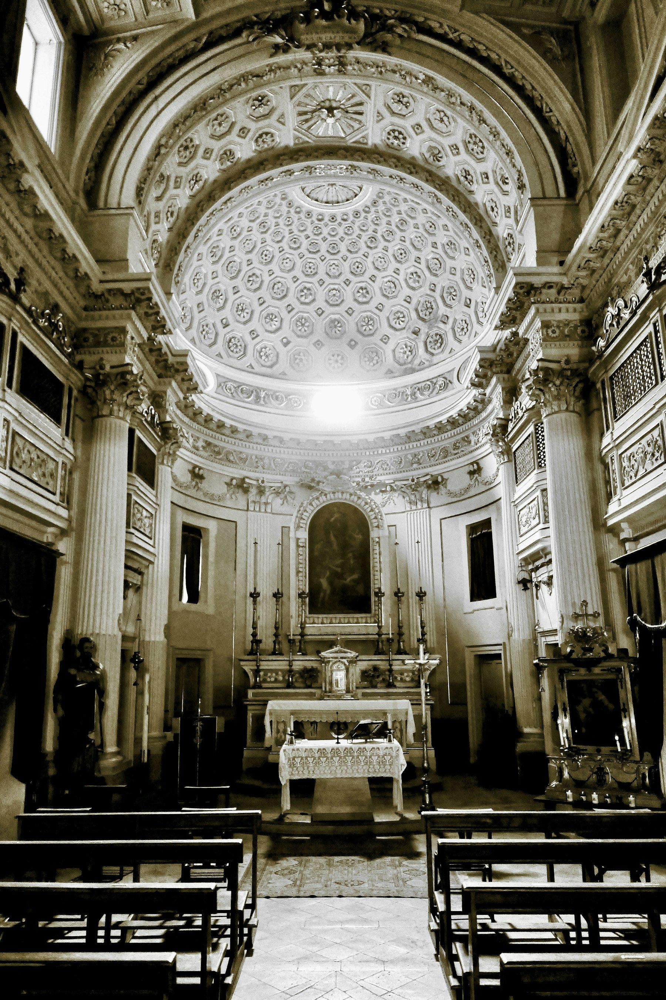

La cerimonia

L'altare della chiesa.
Sabato 10 Luglio,
ore 11:00
CHIESA DI SANTA MARIA DI PORTO SALVO
Reggio Calabria
Vi aspettiamo per lo scambio delle promesse in una delle chiese più care alla città, a due passi dal lungomare. Vi chiediamo di essere presenti con qualche minuto di anticipo.
Apri su Google Maps